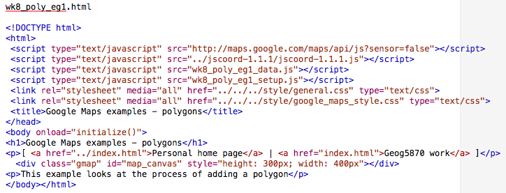
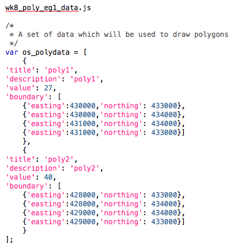
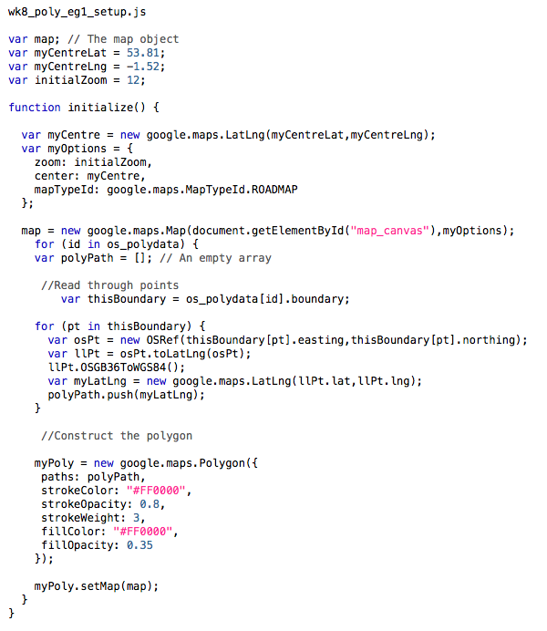

a) Ouput with initial line styles

b) Output with revised line styles
The lines that have been added are called polylines in the Google
Maps API. Polyline is defined by a series of points; this map uses the simplest
of such lines, which are defined by only a start and an end point. Let us
return to the code shown in the map setup script above. The loop
'for (id in os_flows) {}' iterates through the data array, carry
out its body section once for each data point. The first task - as with the
Blue Plaques example from last week - is to convert the location data from OS
grid references to lat-lng data points. In this example, we construct a LatLng
object called myOrig from each point we read. Note that despite
the fact that the eastings and northings are quoted in the data file, and might
thus be thought of as strings, the latlng constructor is happy to treat them as
numeric values.
Next we draw the line. There are two stages to this. Firstly, we contstruct
a polyline object, using 'new google.maps.Polyline()'. This
requires one paramter - an object which lists line co-ordinates and the various
options. The most important of these are the line co-ordinates. These are given
in the path property of the polyline options object. The path is
an array, containing a set of points, each of which is a
google.maps.LatLng() object. We use two points: the
myOrig point that has just been created (as converted from the OS
grid references), and a second point myDest. As this map shows
flows to one location only we define the destination once, and use the same
point each time in our path.
The other characteristics for a polyline are the colour, opacity and width of the line. In this initial example, we have drawn all lines with the same characteristics: opaque red lines of weight 2.
The second thing that we need to do is add the line that has now been
defined to the map. The is done in the statement:
'flowLine.setMap(map);'. We use the setmap() method
of the generic google.maps.Polyline() object to attach the line to
the map, giving the name of the map object to which we wish to attach the line.
As you can see from the figure, the resulting map contains a mass of lines, which does not tell us much apart from the fact that - like most large cities, especially those with large universities, Leeds draws migrants from almost everywhere in the country.
We can alter the setup program to change the line style for flows of
different size. The following figure shows excerpts from the code of a revised example.
Some changes have been made within the initialize() function.
Firstly, we have added three new variables, myColor,
myOpacity and myWeight; as we intend to alter these
characteristics for each line.
We have also added a set of statements into the for loop that cycles through
each data point. We have a series of if {} statements, which ste
up the line characteristics. These are structured so that large flows which
meet all the 'if' criteria (i.e. they're greater than 0, they're also greater
than 10 etc...) will over-write the previous values for myColor
etc.
The lines are set to be drawn in black (but thin, and fairly transparent) is the flow is small, and in red (and thicker, and more opaque) is the flow is larger. This stage is clearly in the arena of basic map design - one needs to know something about the nature of the data being mapped and about the range of possible values, and then try out various different line styles.
The output using this revised version is shown in the second figure above (with red and black lines). The map is clearer, and it is possible to distinguish those origins from which the major flows are drawn, although it is still quite crowded - a common result in maps of this type. Further improvements might be made with changes to the line styles, and we might also decide to only draw those lines that represent flows above a certain threshold (say, 50 persons).
The files used in these two examples are available here:
- wk8_leeds_sms_eg1.html
- wk8_leeds_sms_eg1.mapsetup.js
- wk8_leeds_sms_eg1_data.js
- wk8_leeds_sms_eg1_data_test.js [a truncated data file for initial testing]
- wk8_leeds_sms_eg2.html
- wk8_leeds_sms_eg2_mapsetup.js [uses same data file as eg1]
If you use copies of these, you may need to alter the relative paths in the HEAD section to the JSCoord library and the CSS files.
As with any map, the framing page should give some sort of explanatory key when lines are shown in different colours to convey some quantitative meaning.
excerpts from wk8_leeds_sms_eg2_mapsetup.js
...
var myColor;
var myOpacity;
var myColor;
for (id in os_flows) {
...
if (os_flows[id].flow > 0) {
myColor = "#000000";
myOpacity = 0.2;
myWeight = 1;
}
if (os_flows[id].flow > 10) {
myColor = "#000000";
myOpacity = 0.3;
myWeight = 1;
}
if (os_flows[id].flow > 100) {
myColor = "#EE0000";
myOpacity = 0.7;
myWeight = 2;
}
if (os_flows[id].flow > 1000) {
myColor = "#EE0000";
myOpacity = 0.9;
myWeight = 3;
}
var flowLine = new google.maps.Polyline({
path: [myOrig,myDest],
strokeColor: myColor,
strokeOpacity: myOpacity,
strokeWeight: myWeight
});
flowLine.setMap(map);
}
As described above, a polyline is a line made up of a number of segments (in the above example, only one segment per line) defined as a set of co-ordinates. The step from this to a polygon is straightforward: a polygon is a line which returns to its initial starting point. Polygons have the additional characteristic beyond a line in that the y can have a fill colour (and variable fill opacity) as well as line characteristics.
The following figure shows the code of a set of files which illustrate the construction
of basic polygons. The structure of these files is similar to those that we
used before, but we will run through their contents.
The HTML file wk8_poly_eg1.html is illustrated first. It is very similar to the file use in the line drawing above, differing only in the names of the files loaded, and the on-page text.
The second file is a data file. It defines two polygons with some basic
details, and a boundary property which contains an array of grid
reference points.
wk8_poly_eg1.html
wk8_poly_eg1_data.js
wk8_poly_eg1_setup.js
The final file illustrated above is wk8_poly_eg1.js. Again, it is broadly similar to the previous examples. Instead of drawing lines or creating markers, the main loop in the initialize() function will create some polygons. For each iteration of the loop, the following happens:
- We create the variable
polyPathas an empty array. This will contain thepaththat defines the polygon. - We copy the
boundaryproperty of the current object being read from the data array. (We could work directly onos_polydata[id].boundarybelow; this stage is done to make the code easier to read). - We start a new loop (nested inside the main loop that is processing the data file) to read through the boundary object.
- For each point, we follow the previously illustrated process of conversion from OS grid reference to WGS84 Latlng.
- We add the new point to our path. This is done using
polyPath.push(point).push()is a method attached to the generic Array object, and it adds the argument (in our case, a point) to the end of the array - Having finished processing all of the boundary points, we construct a new
google.maps.Polygon()object. This takes a number of parameters. The stroke parameters refer to the boundary line, whilst the fill parameters refer to the middle of the polygon. - We add the polygon to the map using the setmap() method of the Polygon object (in the same way as we did with the lines).
The map generated in this example is shown above. It can be seen that the polygons are simple squares, with a solid red outline and semi-opaque fill.
Summary
On this page, we have seen examples of how we can add lines and polygons to
a map. The lines example showed how a reasonably large number of lines can be
added, whilst the polygon example used a simpler case. In the case of polygons,
we can generate complex polygons as well as these very simple examples - you
may note that the boundary data was added to the polygon property
paths rather than path as was the case with the
polyline. With polygons, we can add multiple paths, and thus have polygon
objects with more than one component; we can also define polygons with 'holes'
in them.
On the next page , we shall look at how we can add information to polygons.
[ Next: Adding information to polygons ]
[Course Index | Unit Overview]